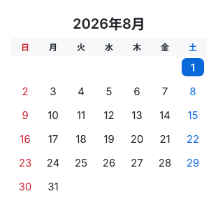
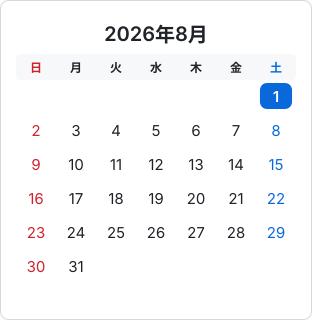
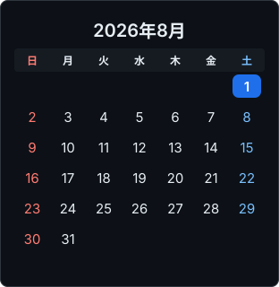
GitHub と同じく <img> 経由で読み込んでいます。枠も余白も付けていませんので、カードの周りに色が見える場合は SVG 自身の背景色と GitHub のキャンバス色の差です。
表示しているのは tests/golden/ のコミット済みファイルそのもので、テストが比較しているものと同一です。
更新: PYTHONPATH=src python3 tests/preview.py --update
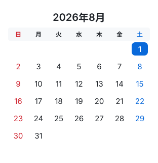
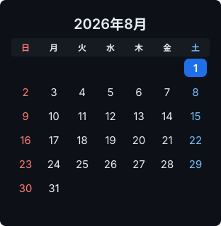
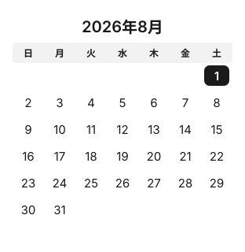
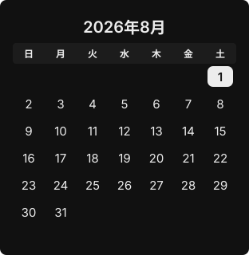
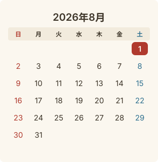
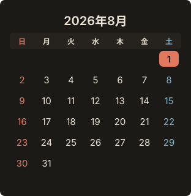



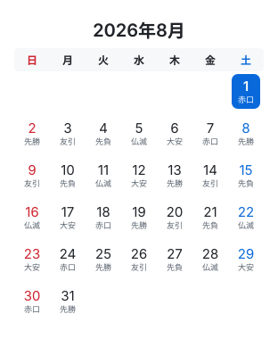
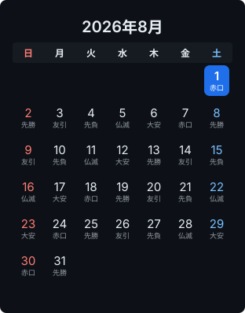
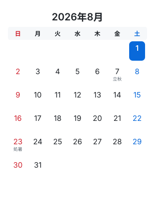
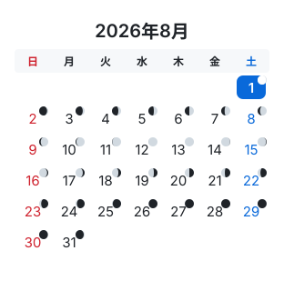
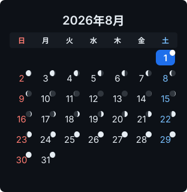
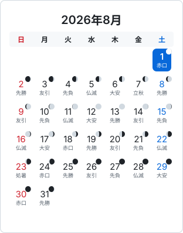
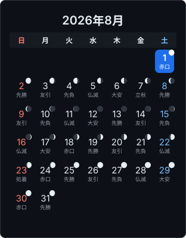
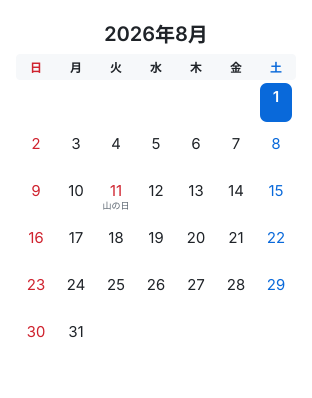
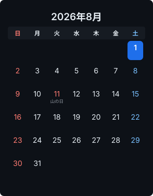
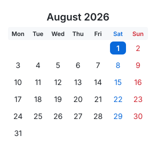
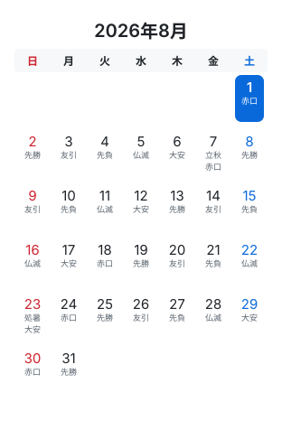
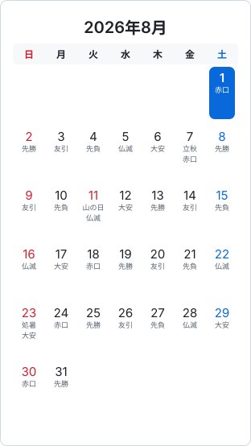
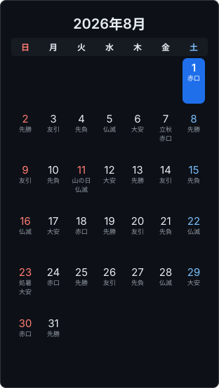
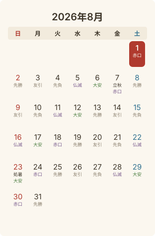
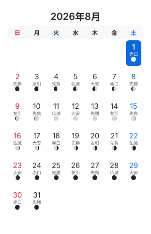
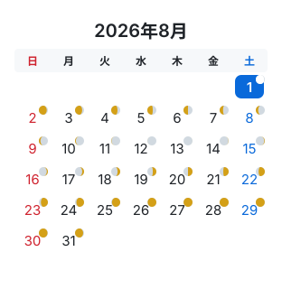
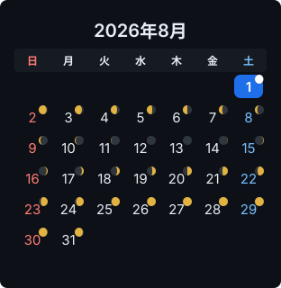
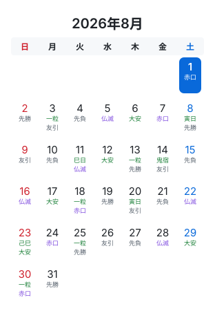
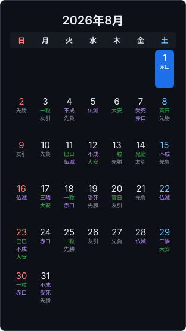
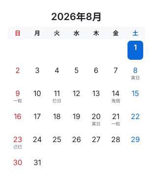
CLI が calendar.html として書き出すスニペットと同じ構造です。OSの外観設定をライト／ダークで切り替えると、下の1枚が入れ替わります。上の一覧は2枚を並べているだけなので、この切り替えはここでしか確認できません。